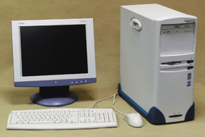
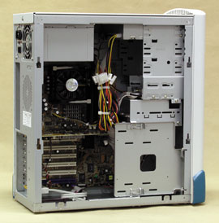
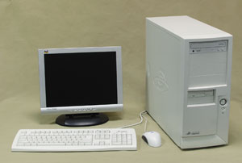
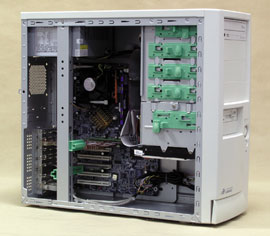
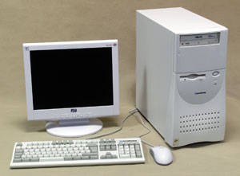
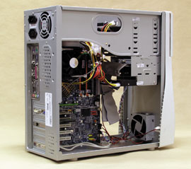
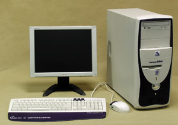
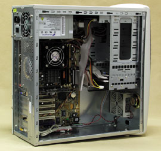

Олег Денисов, Сергей Назаров
Летнее тестирование ПК, проведенное тестовой лабораторией "BYTE/Россия", было не совсем обычным: по заданным нами правилам, на испытания принимались компьютеры только от производителей, активно участвующих в крупных государственных и/или корпоративных тендерах и выпускающих ПК в массовых количествах. Поэтому тестирование оказалось малочисленным - всего четыре машины (и в связи с этим было принято решение не проводить выбор победителей и не отмечать никого знаком "Выбор редакции BYTE/Россия"), но зато представительным - в нем участвовали только ведущие российские производители компьютерной техники.
По правилам тестирования участники могли предоставить для испытаний ПК с любым процессором, официально объявленным на момент проведения тестирования, оперативной памятью объемом 256 Мбайт, видеоподсистемой, обеспечивающей 32-бит цвет при разрешении 1024x768 и частоте регенерации изображения 75 Гц, сетевым Ethernet-интерфейсом, звуковой подсистемой, клавиатурой и мышью. Изготовители могли дополнять машины другими компонентами по собственному выбору. Плюс к тому ограничивалась оптовая цена комплекта из представленных для испытаний системного блока, клавиатуры и мыши, ОС и прилагаемого ПО - не более 700 долл. на момент проведения тестирования при поставке партиями по 100 комплектов.
Мы также просили предоставить на тестирование ПК в комплекте с ЖК-монитором. Но, учитывая, что один и тот же ПК может комплектоваться самыми разными мониторами - в зависимости от потребностей и бюджета покупателя, мы не рассматриваем их в обзоре и приводим данные о них только в качестве дополнительной информации.
Чтобы более развернуто охарактеризовать обсуждаемые здесь ПК, участникам тестирования было предложено предоставить редакции информационные материалы, описывающие: модельный ряд, в который входит тестируемый ПК; концепцию проектирования и применения офисных ПК для крупных корпораций; концепцию построения крупных офисных вычислительных систем; технологию тестирования и отбора комплектующих и тестирования ПК на этапе разработки серийных моделей компьютеров; технологию тестирования серийных ПК в процессе производства; принципы построения и методы работы сервисной службы; а также историческую справку о компании. Эти материалы приводятся в статье во врезках. Все данные об объемах производства каждой компании, занимаемых ею местах в рейтингах и т. п. приведены со слов представителей соответствующей компании и нами не проверялись.
Методика тестированияДля определения общей производительности системы мы пользовались пакетом ZD Business Winstone 2002 1.0.1, предназначенным для измерения быстродействия ПК при работе с популярными офисными приложениями. Производительность ПК при работе с 3D-графикой измерялась с помощью тестов из пакета MadOnion 3DMark2001 SE Build 330. Мы также применяли тесты производительности подсистем процессора и памяти из пакета SiSoft Sandra Standard 2003.3.9.44 и программы WCPUID 3.1a и EnTech PowerStrip 3.40, с помощью которых измерялись рабочие тактовые частоты центральных и графических процессоров, оперативной памяти и видеопамяти. Все тесты проводились в видеорежиме с глубиной цвета 32 бит, разрешением 1024x768 и частотой регенерации изображения 75 Гц под управлением ОС Microsoft Windows XP Professional с Service Pack 1. Подробные характеристики протестированных систем и результаты тестирования приведены в таблицах. |
Aquarius Elt DF240
Выбор качественного корпуса для ПК - одновременно надежного, безопасного, вместительного, удобного и оригинально оформленного - непростая задача, но разработчики Aquarius Elt DF240 отлично с ней справились. Корпус этого ПК предоставляет неплохие возможности для расширения системы - три отсека для внешних 5,25-дюйм накопителей, один - для флоппи- и три - для жестких дисков (причем два из них можно разместить в съемной корзине, что удобно). Для усиления прочности корпуса и жесткости крепления накопителей использована дополнительная стальная пластина - она размещена вертикально в нижнем правом углу и "связывает" стойку с отсеками для накопителей и нижнюю и переднюю панели корпуса. Боковые стенки корпуса фиксируются с помощью удобных замков, врезанных в их верхней части, и снимаются без инструментов. Системная плата крепится на отдельном металлическом шасси. На передней и задней панелях предусмотрено по одному гнезду для дополнительных вентиляторов. Плюс к тому - элегантный и запоминающийся внешний вид корпуса. Правда, на его передней панели нет разъемов для звуковых и USB-портов, что можно считать недостатком, - вывод двух звуковых и двух USB-портов на переднюю панель ПК на сегодня стал фактически стандартом.

Elt DF240 построен на базе качественных и надежных компонентов от производителей с отличной репутацией - это процессор Intel Pentium 4 2,4 ГГц с 533-МГц шиной, системная плата ASUS P4PE на НМС Intel 845PE со встроенным 10/100-Мбит/с сетевым Ethernet-контроллером Broadcom BCM4401, видеоплата ASUS V8170 DDR/SE/T на графическом процессоре Nvidia GeForce4 MX 440-SE с 64-Мбайт видеопамяти, 40-Гбайт жесткий диск Seagate Barracuda 7200.7 ST340014A и 52X накопитель CD-ROM ASUS CD-S520. Отметим также хорошие возможности расширения системы - три гнезда для модулей памяти и шесть свободных PCI-гнезд (правда, два PCI-отсека заняты скобами расширения) - и подключения периферийных устройств - оптический и коаксиальный S/PDIF-выходы, порт Game/MIDI, два последовательных порта и два ТВ-выхода - S-Video и RCA. Кстати, процесс проектирования, разработки и производства этого ПК сертифицирован на соответствие стандарту качества ISO 9001:2001. Кроме того, ПК сертифицирован на совместимость с Microsoft Windows 2000 и Windows XP.

Во время испытаний Elt DF240 показал хорошие результаты в интегральном офисном тесте Business Winstone и в тестах на скорость работы ОЗУ, более скромные - в графическом 3D-тесте 3DMark2001 и в процессорных тестах, что, впрочем, соответствует конфигурации и вычислительным возможностям этой машины.
Помимо системного блока, Elt DF240 комплектуется клавиатурой и мышью стандартной конструкции, печатными руководствами пользователя ПК и системной платы, ОС Microsoft Windows XP Professional и "Антивирусом Касперского" и обеспечивается длительной трехлетней гарантией (подробное описание сети сервисного обслуживания "Аквариус" см. во врезке). Elt DF240 и другую технику "Аквариус" можно приобрести у более чем 750 партнеров компании, закупающих ее через трех дистрибьюторов - Landata, OCS, Verysell.
"Аквариус"Производственная компания "Аквариус" (http://www.aq.ru), основанная в 1989 г., входит в состав группы "Аквариус", которая, в свою очередь, не так давно стала частью холдинга "Национальная компьютерная корпорация" (НКК). Основные направления деятельности "Аквариус" - разработка и изготовление ПК и серверов с торговой маркой Aquarius, развитие и поддержка региональной партнерской сети, развитие региональной сервисной инфраструктуры. "Аквариус" стала первой в России негосударственной организацией, наладившей собственное заводское производство ПК. На сегодня компания располагает заводом по производству ПК в г. Шуя Ивановской обл. мощностью 120 тыс. ПК в год и производственным цехом в Москве мощностью 36 тыс. ПК в год. По данным аналитических агентств IDC и ITResearch, "Аквариус" входит в тройку лидеров продаж ПК и серверов на российском рынке. Семейство ПК Aquarius Elite было разработано компанией "Аквариус" специально для самых требовательных заказчиков. Эти модели отличаются высокой надежностью, качеством, отличными техническими характеристиками, богатой функциональностью, широкими возможностями модернизации, что обеспечивает им длительный срок эксплуатации и низкую совокупную стоимость владения. Их можно успешно использовать для решения самых разных задач - работы с объемными базами данных, 3D-графикой, видеоданными, САПР и т. д. ПК семейства Elite оснащаются процессорами Intel Pentium 4, системными платами ASUSTeK и Intel, сертифицированы на совместимость с Microsoft Windows 2000/XP и могут поставляться с предустановленными лицензионными версиями этих ОС, а также с офисным пакетом Microsoft Office 2000/XP. Компания "Аквариус" выпускает широкий спектр ПК и серверов, позволяющий строить современные офисные вычислительные системы разного назначения. Помимо мощных ПК Aquarius Elite рабочие места могут быть оборудованы недорогими моделями серии Aquarius Standard и рабочими станциями для корпоративных пользователей Aquarius Professional. Коллективные сервисы можно организовать на базе серверов семейств AquaServer E, AquaServer P и AquaServer T. Серверы AquaServer E ориентированы на применение в небольших компаниях или рабочих группах численностью до 20 человек. Эти машины незначительно дороже мощных ПК, но отличаются большей надежностью и лучшими возможностями расширения. Серверы AquaServer P построены на базе платформ Intel и предназначены для работы в крупных сетях и вычислительных центрах. Тщательный отбор комплектующих, предварительное тестирование компонентов и обязательные 72-часовые испытания в термокамере гарантируют, что AquaServer P будут надежно функционировать даже в самых тяжелых условиях. Компактные серверы AquaServer T устанавливаются в 19-дюйм стойку и предназначены для организации телекоммуникационных узлов и вычислительных центров с высокой плотностью вычислительной мощности и коммуникационных портов, с повышенной надежностью, гибким резервированием и распределением нагрузки. Все серверы компании "Аквариус" сертифицируются на совместимость с операционными системами из семейства Microsoft Windows 2000/2003 Server. В процессе разработки серийных моделей тестовая лаборатория "Аквариус" проверяет работоспособность ПК в конфигурациях, собранных из близких по характеристикам компонентов различных производителей, и выдает свои рекомендации по наиболее надежным сочетаниям комплектующих (указывается, какие комплектующие нужно использовать вместе, какие - можно и какие - однозначно нельзя). В дальнейшем "Аквариус" формирует модельный ряд компьютеров, ориентируясь исключительно на первую категорию, но по желанию заказчиков может использовать конфигурации второй категории. Серийное производство ПК Aquarius начинается с входного тестирования комплектующих, причем компания очень строго относится к качеству всей закупаемой партии. Если процент брака превышает допустимый, то "Аквариус" расстается с этим поставщиком независимо от его веса в ИТ-бизнесе. ПК, сошедшие с конвейера, проходят обязательное 24-часовое тестирование в термокамере при температуре 35-40°C. Серверы подвергаются еще более суровым испытаниям - они отправляются заказчику только после безотказной 72-часовой работы в термокамере. На основании статистики сервис-центров постоянно ведется мониторинг и анализ поломок. Служба маркетинга и коммерческая служба регулярно анализируют претензии от заказчиков и дилеров. В итоге TQC-система полного контроля (Total Quality Control) объединяет все подразделения компании. Летом 2002 г. "Аквариус" внедрила новую модель построения сети сервисного обслуживания. Этот шаг был вызван активной региональной экспансией дистрибьюторов техники "Аквариус", потребовавшей полноценного гарантийного обслуживания и наличия разветвленной сети сервисных центров во всех субъектах Российской Федерации. Сегодня эта сеть насчитывает 173 сервисных центра во всех регионах России. Была разработана собственная программа сервисного обслуживания, которая дает возможность любой региональной компании, отвечающей квалификационным требованиям, стать сервисным центром "Аквариус". Поскольку компания-производитель доверяет зачастую незнакомым фирмам свою репутацию, требования по качеству обслуживания (в них включается как собственно качество ремонта, так и соблюдение трехдневного срока) были достаточно жесткими. Чтобы заинтересовать потенциальных партнеров, необходимо было предоставить им возможность хорошо зарабатывать именно на ремонте техники. Проанализировав статистику отказов, "Аквариус" предприняла неординарный шаг - за каждый ремонтный случай партнерам выплачивается 25 долл. при замене комплектующих (без учета стоимости последних) и 5 долл., если комплектующие не заменяются. Практически все авторизованные сервисные центры, за исключением московского, не являются структурными подразделениями "Аквариус". В программе также подробно перечислены случаи, в которых компания разрывает отношения с сервисным центром, лишая его авторизации, - несоблюдение сроков ремонта (не более трех дней), некачественный ремонт и использование комплектующих, не входящих в список рекомендованных "Аквариус". В августе 2003 г. "Аквариус" планирует начать реализацию программы авторизации сервисных центров по обслуживанию серверов. В данный момент на месте эксплуатации обслуживается техника, поставленная компанией "Аквариус" нескольким крупным корпоративным заказчикам - Фонду социального страхования РФ, Министерству финансов РФ, поставки в рамках программы "Дети России" и т. д. Сервисные работы выполняются партнерами "Аквариус" по отдельным договорам. Сейчас разрабатывается также общая система расширенной сервисной поддержки, которая будет доступна любому покупателю техники "Аквариус" и должна быть запущена к концу 2003 г. Эта система будет включать такие виды услуг, как ремонт на месте эксплуатации, ускоренные сроки ремонта техники, гарантированное оказание услуг, например, 24 часа в день 365 дней в году и т. д. Стоимость пакетов расширенного сервиса будет, разумеется, зависеть от их содержания. Корпоративные заказчики, заключившие договор на расширенное сервисное обслуживание, обеспечиваются техническими консультациями по телефону от сервисных партнеров "Аквариус". Другие пользователи техники "Аквариус" могут проконсультироваться по телефону или электронной почте в московском сервисном центре компании. Кроме того, практически во всех городах, где продается и установлена продукция "Аквариус", действуют авторизованные сервисные центры, в которые пользователи могут обратиться за консультациями в рабочее время. Когда начнется продажа пакетов расширенного сервиса, пользователи при необходимости смогут получить круглосуточную поддержку. |
DEPO Race 465
Среди всех протестированных ПК модель DEPO Race 465 выделялась самым мощным процессором и быстрой системной памятью - Intel Pentium 4 2,8 ГГц с 800-МГц системной шиной и средствами Hyper-Threading в "связке" с двухканальной DDR400 SDRAM. Неудивительно, что эта модель и заняла первое место в тестах на скорость работы процессора и ОЗУ.
Характеристики процессора и памяти в сочетании с быстрым 40-Гбайт жестким диском Western Digital Caviar Special Edition WD400JB с 8-Мбайт кэш-буфером обеспечили DEPO Race 465 заметное преимущество в интегральном тесте Business Winstone, где он значительно опередил всех конкурентов. Однако лидерство этой модели не было бесспорным - Race 465 оснащен 512-Мбайт ОЗУ, что не соответствовало требованиям к тестируемым ПК (256 Мбайт ОЗУ). В графическом 3D-тесте 3DMark2001 результативность этого ПК была скромнее - третье место.

Race 465 собран в корпусе с очень хорошо продуманной конструкцией. Прежде всего он вместителен - можно установить четыре внешних 5,25-дюйм накопителей, внешний флоппи- и по одному внешнему и внутреннему (или два внутренних) 3,5-дюйм накопителю. Даже при этом внутри ПК весьма просторно, и можно легко добраться до всех внутренних компонентов. Под защитной крышкой на передней панели ПК "спрятаны" два USB- и два звуковых разъема. Левая боковая крышка корпуса устанавливается и снимается без инструментов (кстати, ее можно заблокировать с помощью замка - для этого на задней панели предусмотрено специальное ушко), как и все внутренние 5,25-дюйм устройства и флоппи-накопитель - они фиксируются пластиковыми защелками. Системная плата крепится на отдельном металлическом шасси. Прочность корпуса усилена вертикальным ребром жесткости, на котором также размещаются пластиковые фиксаторы плат расширения. На передней и задней панелях размещено по одному посадочному гнезду для дополнительных вентиляторов.

К достоинствам Race 465 следует также отнести применение качественных модулей памяти производства Kingston, "обвязанных" металлическими охлаждающими радиаторами, быстрой гигабитной Ethernet-платы Intel PRO/1000 MT Desktop Adapter, наличие DVI-I- и ТВ-выхода, полную "разводку" USB-подсистемы - восемь внешних USB-портов (как правило, изготовители ПК ограничиваются шестью или четырьмя) и наличие двух последовательных портов. Звуковая подсистема этого ПК вполне обычна - она построена на базе шестиканального AC'97-аудиокодека Realtek ALC655 (отметим здесь отсутствие порта Game/MIDI).
В комплект поставки Race 465, помимо системного блока, включается стандартная клавиатура DEPO KWD-701, оптическая мышь DEPO C1310, ОС Microsoft Windows XP Professional, руководство пользователя ПК и руководство по быстрой установке. Подчеркнем, что Race 465 сертифицирован на совместимость с Microsoft Windows 2000/XP, а процесс его изготовления сертифицирован на соответствие стандарту качества ISO 9001.
В стоимость Race 465 включено трехлетнее гарантийное обслуживание в сервисных центрах "Дилайн" (более 130 центров на территории России) с максимальным пятидневным сроком ремонта, но при желании пользователь может выбрать другой гарантийный план: два года обслуживания в сервисном центре - минус 12 долл. от стоимости ПК, два года с обслуживанием на месте эксплуатации в течение первого года - плюс 44 долл., три года с обслуживанием на месте эксплуатации в течение первого года - плюс 58 долл., два года обслуживания на месте эксплуатации - плюс 69 долл., три года на месте эксплуатации - плюс 127 долл.
"Дилайн"Компания "Дилайн" (http://www.dealine.ru), крупный российский дистрибьютор и производитель компьютерной техники, выпускает ПК под торговой маркой DEPO с июня 2002 г. Этому предшествовала серьезная подготовительная работа, включающая исследование рынка, изучение мирового опыта производства ПК, отработку технологии производства и процесса взаимодействия с поставщиками и клиентами, организацию службы поддержки и сервисной сети. Кроме того, большую роль сыграл собственный опыт производства "небрэндированных" ПК - с 2000 г. "Дилайн" поставляла white boxes (платформы из протестированных комплектующих для сборки компьютеров). В настоящее время "Дилайн" выпускает полный ассортимент ПК, который включает семейства персональных компьютеров DEPO Neos, Myst, Race, рабочих станций DEPO Race и серверов DEPO Storm с общим объемом продаж продукции под торговой маркой DEPO около 12 тыс. штук в месяц. Компьютеры DEPO производятся в промышленных условиях на собственных производственных мощностях компании "Дилайн", расположенных на территории единого офисно-складского комплекса и рассчитанных на выпуск до 1000 компьютеров и 20 серверов в день*. Производство компьютеров DEPO сертифицировано на соответствие системы управления качеством двум стандартам: международному TUV CERT ISO 9001 и российскому стандарту ГОСТ Р ИСО 9001-2001. В производственном цехе "Дилайн" установлены современные линии; квалификация работающих на них специалистов, необходимая для производства каждой модели техники DEPO, подтверждается соответствующими сертификатами.
* Данные IDC/ITResearch о реальных объемах производства на первое полугодие 2003 г. показывают, что производственный потенциал компании пока задействован не полностью. В производственном цикле реализовано распараллеливание операций, что предусматривает возможность одновременной работы нескольких участков над одним заказом. Благодаря концепции "точно в срок" (just-in-time) в нужное время на нужном участке все процессы синхронизируются, что дает существенное повышение производительности труда. Технологический процесс начинается с подготовительного этапа, на котором происходит обработка и подготовка комплектующих и их 100%-ный входной контроль. При изготовлении техники DEPO применяются только качественные современные компоненты известных торговых марок, хорошо зарекомендовавших себя на рынке, поступающие с крупнейшего в России склада компьютерных комплектующих. Подготовленные компоненты попадают на линию сборки и выходного контроля, на которой выполняется собственно сборка и тестирование готовых изделий. Продукция DEPO имеет все необходимые сертификаты (гигиенический и РОСТеста) в соответствии с текущим законодательством. Все линейки ПК DEPO сертифицированы на совместимость с ОС Microsoft Windows 2000/XP. Серверы DEPO сертифицированы на совместимость с Microsoft Windows 2000 Server и Windows 2000 Advanced Server. С учетом повышенных требований, предъявляемых к качеству серверов, и с целью обеспечения их высокой надежности серверы DEPO проходят длительный цикл тестирования - в том числе под нагрузкой. В структуре подразделений компании "Дилайн" создан специальный отдел, занимающийся техническими исследованиями и разработками. Основные задачи отдела исследований и разработок - определение перспективных направлений развития модельных рядов техники DEPO с учетом их соответствия передовым и эффективным технологиям; разработка и создание образцов продукции на основе данных исследований о предпочтениях покупателей и в соответствии с тенденциями развития отрасли; всестороннее тестирование образцов на совместимость с операционными системами и получение необходимых сертификатов; привлечение независимых сертификационных лабораторий для дополнительного комплексного тестирования продукции; создание эталона продукции для последующего запуска в серийное производство; разработка и постоянное совершенствование методики тестирования готовой продукции; создание листов совместимости с опциями для каждой модели. Компания "Дилайн" не работает по фиксированному прайс-листу со списком типовых моделей техники, но дает возможность каждому покупателю подобрать собственную конфигурацию ПК или сервера. Через Интернет покупатель может в любое время спроектировать необходимую конфигурацию компьютера с помощью онлайнового инструментария и выбрать нужное ПО. Таким образом, сделанная на заказ система будет точно отвечать потребностям пользователя. ПК семейства DEPO Race позиционируются компанией "Дилайн" как мощные корпоративные машины и предназначены для пользователей с повышенными требованиями к производительности системы - системных администраторов, разработчиков ПО и баз данных, руководителей компаний и предприятий и тех, кто активно работает с цифровой графикой, аудио- и видеоданными. Реализованные в моделях семейства DEPO Race новейшие архитектурные решения и технологические достижения гарантируют длительный жизненный цикл ПК и предоставляют отличные возможности для расширения системы. Семейство DEPO Race представлено двумя моделями - DEPO Race 465 и DEPO Race 475, построенными соответственно на базе системных плат с НМС Intel 865PE и Intel 875P. Отличительные особенности этих машин - оснащенность процессорами Intel Pentium 4 с 800-МГц системной шиной и встроенными средствами Hyper-Threading, двухканальной DDR400 SDRAM-памятью, графическим интерфейсом AGP 8X и интерфейсом Serial ATA/150 для подключения жестких дисков. |
GEG Prestige 41240A
ПК GEG Prestige 41240A очень хорошо зарекомендовал себя в тестах на скорость работы. Благодаря быстрой видеоплате Gigabyte GV-R9264D на графическом процессоре ATI RADEON 9200 с 64-Мбайт DDR-видеопамятью и 8X AGP-интерфейсом Prestige 41240A лидировал в графическом 3D-тесте 3DMark2001, в то время как мощный процессор Intel Pentium 4 2,4 ГГц с 800-МГц системной шиной и встроенными средствами Hyper-Threading и скоростная двухканальная DDR333 SDRAM-память обеспечили этой модели второе место в процессорных тестах и в тестах на скорость работы ОЗУ. Prestige 41240A неплохо показал себя и в интегральном офисном тесте Business Winstone, но в нем ему удалось занять лишь третье место.
Применение качественных современных компонентов от ведущих изготовителей - несомненное достоинство Prestige 41240A. Помимо уже упомянутых процессора Intel и видеоплаты от Gigabyte, ПК оснащен системной платой Gigabyte GA-8IPE1000 на базе новейшего НМС Intel 865PE со встроенной стандартной шестиканальной AC'97-аудиоподсистемой, 40-Гбайт жестким диском Maxtor DiamondMax Plus 8 6E040L0 и 50X накопителем CD-ROM ASUS CD-S500. Отметим также, что процесс производства Prestige 41240A сертифицирован на соответствие стандарту качества ISO 9001.

Prestige 41240A предоставляет хорошие возможности для наращивания системы - четыре гнезда для модулей памяти (общая емкость ОЗУ - до 4 Гбайт), пять PCI-гнезд (из них четыре не заняты), три отсека для внешних 5,25-дюйм накопителей, один - для флоппи-накопителя, два - для жестких дисков. Однако с расширением периферийной части дело обстоит несколько хуже - ПК оборудован цифровым DVI-I-выходом для подключения ЖК-монитора, комбинированным S-Video-RCA ТВ-выходом для подсоединения ТВ-приемника, 10/100-Мбит/с сетевым Ethernet-интерфейсом (реализован средствами PCI-адаптера Repotec RP-1624W), двумя последовательными портами, но не имеет Game/MIDI- и S/PDIF-портов.
ПК собран в грамотно сконструированном корпусе. Обеспечивается свободный доступ ко всем внутренним компонентам системы, за исключением блока питания и отсеков для 5,25-дюйм накопителей - они "перекрыты" дополнительным ребром жесткости, усиливающим прочность корпуса. Блок питания оборудован "сквозным" разъемом питания - к нему, как правило, подключается монитор, что очень удобно. На передней панели размещен дополнительный вентилятор, надежно защищенный металлическим кожухом, на задней - гнездо для второго дополнительного вентилятора. Отсеки для 5,25-дюйм накопителей закрыты снаружи пылезащитной дверцей с вырезом для доступа к верхнему отсеку - в нем был установлен накопитель CD-ROM. К сожалению, на передней панели корпуса нет внешних разъемов для USB-портов и звуковых портов, что на сегодняшний день можно считать недостатком (впрочем, несущественным).

В комплект поставки Prestige 41240A включается клавиатура и мышь стандартной конструкции, печатное руководство пользователя ПК и системной платы, ОС Microsoft Windows XP Professional и антивирусный пакет Norton AntiVirus 2003. Стандартно ПК обеспечивается трехлетней гарантией с бесплатным обслуживанием на месте эксплуатации в течение одного года, но для корпоративных заказчиков возможно заключение отдельного договора на обслуживание техники на месте эксплуатации в течение всего гарантийного срока и на замену вышедших из строя компонентов в течение 24 ч.
Kraftway ComputersКомпания Kraftway Computers (http://www.kraftway.ru) наладила выпуск ПК и серверов под собственной торговой маркой GEG в 1993 г. и уже в следующем году развернула производственные мощности в технологических помещениях Государственного научно-производственного предприятия "Квант" и подписала OEM-соглашение с Microsoft на установку лицензионного ПО на ПК GEG. В 1995 г. ПК GEG прошли тестирование на совместимость с ПО Microsoft, было начато серийное производство двухпроцессорных серверов, а компания вошла в список предприятий промышленности, ответственных за поставку техники для Министерства обороны России. В 1996 г. производство компьютеров Kraftway было сертифицировано на соответствие требованиям стандарта ISO 9001, был начат выпуск серверов в индустриальном исполнении GEG Industrial и четырехпроцессорных серверов. Компания вошла в десятку крупнейших российских производителей ПК. В 1999 г. Kraftway выпустила первый восьмипроцессорный сервер и стала, по признанию Intel, лидером на российском рынке серверов, годом позже получила статус Intel Premier Provider и вошла в тройку крупнейших российских производителей ПК. В 2002 г. компания начала выпуск серверов на базе процессоров Intel Itanium 2, приняла участие в форумах Intel для разработчиков (IDF) в Сан-Хосе и Москве и начала строительство собственного производственно-логистического центра в Обнинске Калужской области, в следующем году - запустила новые производственные мощности, позволяющие выпускать до 30 тыс. ПК в месяц*, и открыла Центр серверных решений Kraftway на платформе Intel. * Данные IDC/ITResearch о реальных объемах производства на первое полугодие 2003 г. показывают, что производственный потенциал компании пока задействован не полностью. На сегодня Kraftway Computers выпускает широкий ассортимент ПК, разработанный на основе накопленной более чем за 10 лет работы статистики продаж, опросов дилерской сети и специальных глубинных маркетинговых исследований и перекрывающий практически все потребительские ниши - от недорогих офисных ПК до мощных двухпроцессорных графических станций на процессорах Intel Xeon. ПК производства Kraftway базируются на системных платах Gigabyte и процессорах Intel и AMD и оснащаются OC Microsoft Windows XP или Linux. Серверы Kraftway выпускаются на платформах Intel. ПК GEG Prestige были разработаны и позиционируются как высокопроизводительные рабочие станции, которые могут применяться для решения самых разных задач - в качестве мощных домашних машин, графических рабочих станций и систем для научных и инженерных расчетов. Характерные особенности этих ПК - мощные процессоры в сочетании с ОЗУ большого объема, быстрая графическая подсистема, широкие возможности модернизации и наращивания производительности системы. Модельный ряд GEG Prestige включает несколько серий ПК, отличающихся компонентной базой. Машины серии GEG Prestige DV35xx оснащаются процессором AMD Duron 1,2-1,3 ГГц или AMD Athlon XP 1700-2800+, системной платой на наборе микросхем VIA KM266, системной памятью DDR266/DDR200 SDRAM, встроенной видеоподсистемой без локальной видеопамяти (вместо нее используется до 32 Мбайт системной памяти). Серия GEG Prestige DA36xx включает AMD Duron 1,2-1,3 ГГц или AMD Athlon XP 1700-2800+, НМС AMD 761, память DDR266/DDR200 SDRAM, AGP-видеоплату с 32-Мбайт локальной видеопамятью. GEG Prestige 4I10xx основаны на Intel Pentium 4 1,8-3,06 ГГц и НМС SiS655, имеют двухканальную DDR266/333/400 SDRAM, AGP-видеоплату с 32 Мбайт локальной видеопамяти. Серия GEG Prestige 4I20xx - это Intel Pentium 4 1,8-3,06 ГГц, НМС Intel E7205, двухканальная память DDR200/266 SDRAM, AGP-видеоплата с 32 Мбайт локальной видеопамяти. Модели GEG Prestige AA10xx включают до двух процессоров AMD Athlon MP 2,0-2,6 ГГц, НМС AMD 760MXP, память DDR266/DDR200 SDRAM, AGP-видеоплату с 32 Мбайт локальной видеопамяти. Серия GEG Prestige XI31xx содержит до двух процессоров Intel Xeon DP 1,8-3,06 ГГц, НМС Intel E7505, память DDR266/DDR200 SDRAM, встроенную видеоподсистему (используется до 8 Мбайт памяти из ОЗУ). Базовые конфигурации всех ПК GEG Prestige имеют "на борту" Ethernet-интерфейс, за исключением машин серии GEG Prestige DA36xx - эти модели оснащаются им дополнительно. Все машины GEG Prestige также "по умолчанию" оборудованы встроенной AC'97-аудиоподсистемой. ПК Kraftway Computers проходят жесткий технологический контроль на всех этапах производства. Методы контроля условно можно разделить на три группы - визуальные, программные и электромеханические. Визуальные методы контроля применяются в самом начале производственного процесса для обнаружения очевидного конструктивного брака комплектующих - повреждение лакокрасочного или проводящего слоя, нарушение геометрии вследствие неправильной транспортировки и т. д. - и в ходе приемки собранного изделия - для проверки правильности крепления узлов, прокладки шлейфов и т. д. Программные методы контроля предназначены для проверки заявленной функциональности изделия, снижения трудоемкости и монотонности труда персонала (например, путем автоматизации операций сравнения конфигурации изделия с эталонной) и позволяют точно документировать результаты контроля (т. е. избежать ошибок, связанных с человеческим фактором). Для такого контроля применяются специальные тестовые программы как собственной разработки, так и от ведущих разработчиков тестового ПО и производителей комплектующих. Эти программы объединяются в группы тестов, предназначенные для проверки конкретного контроллера или целого блока изделия. До запуска в производство для каждой конфигурации изделия из групп тестов создается уникальный набор тестовых воздействий, в котором, помимо прочего, задается порядок прохождения тестов (последовательность, одновременность) и эталонные результаты тестирования. Постановка изделия на тестирование происходит в полуавтоматическом режиме, протоколирование результатов тестирования - в автоматическом. Это дает дополнительную страховку от "человеческой" ошибки, не позволяя передать изделие на следующий участок производства, если автоматически сохраняемые в единой базе данных результаты тестирования расходятся с эталонными. Электромеханические методы контроля предназначены для обеспечения электробезопасности изделия и проверки надежности крепления его узлов и блоков. Чтобы определить технические перспективы возможного применения новых комплектующих и архитектур для расширения модельного ряда серверов и ПК Kraftway Computers, в компании была создана лаборатория бета-тестирования, специалисты которой создают прототипы продуктов и с помощью межплатформенных измерительных пакетов проверяют скорость выполнения стандартных операций и совместимость этих систем с различным периферийным оборудованием и корпусами. Сервисная сеть Kraftway включает 115 сервисных центров на всей территории страны. |
Irbis Favorite C2425/80F
По мощности процессора (Intel Celeron 2,4 ГГц с 400-МГц системной шиной и 128-Кбайт кэшем L2) и быстродействию ОЗУ (одноканальная DDR266 SDRAM) Irbis Favorite C2425/80F уступал другим участникам тестирования; кроме того, он был оснащен довольно медленной видеоплатой (InnoVISION Tornado GeForce4 MX 440 SE на графическом процессоре Nvidia GeForce4 MX 440-SE с 64 Мбайт DDR-видеопамяти). Как следствие, этот ПК отстал от конкурентов в тестах на скорость работы. Но в пользу этой модели говорит низкая цена (640 долл.) и внушительная емкость дисковой подсистемы на базе 80-Гбайт накопителя Maxtor DiamondMax Plus 9 6Y080L0 - по данным характеристикам Irbis Favorite лидировал. Этот ПК также оказался единственным, оснащенным комбинированным оптическим накопителем CD-RW/DVD-ROM (Toshiba SD-R1312); в остальных протестированных моделях были установлены "простенькие" и, конечно, менее дорогие накопители CD-ROM.

Плюс к тому качественная системная плата от производителя с отличной репутацией (ASUS P4PE на НМС Intel 845PE), хорошие возможности расширения системы - три разъема для модулей памяти с емкостью ОЗУ до 2 Гбайт; шесть свободных PCI-гнезд (правда, два отсека для PCI-плат заняты скобами расширения); четыре отсека для внешних 5,25-дюйм накопителей, один - для флоппи-накопителя, два - для жестких дисков - и подключения периферии (ТВ-выход, встроенный 10/100-Мбит/с Ethernet-контроллер Broadcom BCM4401, два последовательных порта и встроенная шестиканальная звуковая подсистема с оптическим и коаксиальным S/PDIF-выходом и портом Game/MIDI). Отметим также, что система менеджмента качества компании "К-Системс", выпускающей Irbis Favorite, на всех этапах производства сертифицирована на соответствие требованиям стандарта ISO 9001:2000.

Irbis Favorite собирается в корпусе middle tower с семью отсеками для накопителей, что довольно много для системного блока такого типоразмера, однако в нем обеспечен свободный доступ ко всем внутренним компонентам, и внутри ПК достаточно просторно. К конструктивным достоинствам корпуса этой модели следует также отнести наличие съемных боковых панелей, двух гнезд для дополнительных вентиляторов - по одному на задней и передней панелях (причем последний надежно защищается пластиковым кожухом) и отсека на передней панели для внешних звуковых и USB-портов (правда, в тестировавшемся экземпляре Irbis Favorite они не были задействованы).
Irbis Favorite комплектуется клавиатурой и мышью стандартной конструкции (дополнительно имеются три кнопки - Wake Up, Sleep, Power - и подставка для рук у клавиатуры), печатными руководствами пользователя ПК и системной платы, ОС Microsoft Windows XP Professional и программой Acronis True Image для резервного копирования данных.
ПК Irbis Favorite обеспечивается двухлетней гарантией с обслуживанием в головном сервисном центре "К-Системс" в Москве и более чем в 90 региональных авторизованных сервисных центров по всей России. Покупатель вправе самостоятельно проводить модернизацию ПК, но в этом случае гарантия не распространяется на самостоятельно установленные компоненты и на дефекты, возникшие вследствие подобной модернизации. При наличии аналогов замена вышедших из строя компонентов производится в течение 24 ч, в экстренных случаях предоставляется оборудование на подмену на время ремонта. В пределах МКАД по отдельному договору возможно обслуживание на месте эксплуатации - стоимость этой услуги зависит от количества обслуживаемой техники, но не более 10% от стоимости оборудования в год. В течение гарантийного периода также обеспечивается бесплатная сервисная поддержка - консультации по телефону и электронной почте, обновление драйверов на ftp-сервере "К-Системс".
Оптовой продажей ПК Irbis в Москве и Санкт-Петербурге занимается отдел прямых продаж "К-Системс", розничные продажи идут через торговые розничные сети "Белый Ветер", "М.Видео", "Эльдорадо" и "ТехноСила". В других городах России ПК Irbis можно приобрести у более чем 30 региональных партнеров.
"К-Системс"Компания "К-Системс" (http://www.k-systems.ru) работает на отечественном ИТ-рынке с 1994 г. и серийно выпускает компьютерную технику под собственной торговой маркой. Основные направления деятельности компании - производство настольных ПК, серверов, профессиональных графических станций, мониторов, ноутбуков, Windows-терминалов и средств отображения информации; корпоративные поставки; реализация комплексных проектов; сервисное обслуживание клиентов. По оценке аналитиков IDC, в 2002 г. и в первом квартале 2003 г. "К-Системс" вошла в пятерку ведущих российских производителей ПК. Компания "К-Системс" обладает собственными производственными мощностями. В 2002 г. в Москве начал работу новый сборочный цех, позволяющий ежемесячно собирать и тестировать более 18 тыс. компьютеров*. "К-Системс" делает ставку на стапельное производство - такой подход обеспечивает лучшее качество продукции по сравнению с автоматизированной сборкой и позволяет оперативно корректировать конфигурацию конечного изделия. * Данные IDC/ITResearch о реальных объемах производства на первое полугодие 2003 г. показывают, что производственный потенциал компании пока задействован не полностью. Система менеджмента качества компании сертифицирована на соответствие требованиям международного стандарта ISO 9001:2000. Качество продукции "К-Системс" также подтверждено статусом поставщика категории Intel Premier Provider, сертификатами соответствия гигиеническим нормам, требованиям Госстандарта России, Гостехкомиссии при Президенте РФ, систем сертификации "Связь" и "Инфосерт". Компания имеет лицензии ФСБ России, ФАПСИ и Гостехкомиссии при Президенте РФ, в том числе на работы в области защиты информации и оказание услуг по защите гостайны. При проектировании офисных ПК инженеры "К-Системс" руководствуются следующими критериями: надежность системы как единого целого; совместимость с наиболее распространенным ПО; оптимальная функциональность для выбранного класса задач; простота подготовки к работе за счет предварительной установки ПО; эргономика системы (дизайн, габариты, шум); комплектация, облегчающая использование ПК; качественная техническая поддержка и сервисное обслуживание; наилучшее соотношение стоимости и всех перечисленных характеристик; пожелания заказчика, если они не противоречат концепции проектирования компании. По мнению инженеров "К-Системс", процессоры Intel имеют преимущество по сравнению с процессорами AMD, обеспечивая лучшую термостабильность, встроенные средства защиты от перегрева, более высокую частоту системной шины, дополнительный набор SSE2-команд для обработки мультимедийных данных. Поэтому при выборе конфигурации машины, представлявшей модельный ряд Irbis Favorite во время испытаний, рассматривались два варианта процессора - Pentium 4 и Celeron, однако ограничение на стоимость системы стало решающим аргументом в пользу Celeron с тактовой частотой 2,4 ГГц. По статистике продаж "К-Системс", корпоративные заказчики отдают предпочтение встроенным графическим контроллерам Intel Extreme Graphics и дискретным видеоадаптерам на графическом процессоре Nvidia GeForce4 MX 440-SE. Применение Intel Celeron позволило выбрать для представленного на тестирование ПК более мощный видеоадаптер на базе Nvidia GeForce4 MX 440-SE. НМС для системных плат от Intel пользуются наибольшим доверием у корпоративных заказчиков благодаря жестким требованиям Intel к качеству выпускаемой продукции. Выбор конкретной модели НМС - Intel 845PE - обусловлен выбором процессора и дискретного видеоадаптера. Этот НМС также обеспечивает возможность дальнейшего наращивания мощности ПК в том случае, если будет заменен процессор или увеличен объем ОЗУ. На сегодняшний день выбор памяти наиболее очевиден - PC2100 или PC2700 DDR SDRAM. В протестированном ПК Irbis Favorite применяется память PC2100 DDR SDRAM, поскольку при работе Intel Celeron в сочетании с выбранным НМС частота шины памяти не может превышать 266 МГц. В качестве дисковой подсистемы был выбран накопитель емкостью 80 Гбайт с интерфейсом Ultra ATA/100, скоростью вращения 7200 об./мин, без организации RAID-массива. Применение дисковых подсистем с интерфейсами Serial ATA/150 и SCSI в ПК данного класса нецелесообразно - их стоимость значительно выше (по крайней мере, для Serial ATA). Создание RAID-массива оправданно лишь в двух случаях - для достижения максимальной производительности (например, при выполнении объемных инженерных расчетов) и создания высоконадежной системы хранения данных (что характерно для серверных приложений). Большинство поставляемых офисных ПК Irbis Favorite оснащаются 52X накопителем CD-ROM, но при необходимости можно заказать и другой. Например, тестировавшийся экземпляр Irbis Favorite был оборудован комбинированным накопителем DVD-ROM/CD-RW. Выбранные НМС и системная плата обеспечивают работу с шестиканальным звуком, хотя при работе в офисе вполне достаточно двухканальной акустики. Колонки в комплект стандартной поставки ПК не включаются, поскольку многие пользователи вместо них применяют наушники (например, в больших офисах). Понятие "офисный ПК" подразумевает коллективную работу и доступ к Интернету, поэтому ПК Irbis Favorite обязательно оснащаются 10/100-Мбит/с Ethernet-интерфейсом. ПК может быть дополнительно оборудован внутренним модемом, но в базовую конфигурацию это устройство не включается - продажи в корпоративном секторе ориентированы в основном на большие офисы с централизованным доступом к Интернету. На все ПК Irbis Favorite устанавливается лицензионное ПО. Предварительная установка ОС предпочтительнее по двум причинам - быстрое развертывание ПК и корректность установки ОС, драйверов, сервисных пакетов и т. д. ПК Irbis Favorite в базовой конфигурации поставляются с ОС Microsoft Windows XP Professional (при поставках техники для больших офисов с иерархической доменной структурой) или Windows XP Home Edition - для домашних или малых офисов. По желанию заказчика могут быть установлены Microsoft Windows 98 SE, Windows 2000 Professional, ASP Linux 7.3 или 9.0. Для восстановления ОС на все ПК Irbis устанавливается специальное ПО Acronis True Image OEM PC. Этот пакет позволяет быстро восстановить исходный образ ОС и, кроме того, вести собственный архив данных. Для выполнения типичного набора задач в офисную инфраструктуру, как правило, включается: группа серверов различной функциональности (сервер доступа в Интернет, управления доменной структурой, баз данных, файловый сервер) и рабочие места пользователей. Для повышения сохранности и конфиденциальности информации "К-Системс" предлагает Windows-терминалы Termin. Кроме того, компания выпускает различные модели полноформатных ПК Irbis Favorite и малогабаритных ПК Irbis M для "среднестатистических" сотрудников и системы на базе Intel Pentium 4 со встроенными средствами Hyper-Threading для пользователей с повышенными требованиями к производительности машин. |